GitHub-repositorion
asetuksista
hallitaan projektin näkyvyyttä, käyttäjien käyttöoikeuksia ja suojauksia.
Oikein määritetyt asetukset parantavat projektin tietoturvaa,
ylläpidettävyyttä ja yhteistyötä.
Tässä osiossa käydään läpi tärkeimmät asetukset, kuten repositorion
näkyvyyden muuttaminen, käyttäjien (
collaborators
) lisääminen, haarojen suojaaminen (
branch protection rules
), sekä repositorion poistaminen. Lisäksi tutustutaan muutamiin hyödyllisiin
perusasetuksiin, kuten oletushaaran uudelleen nimeäminen ja vaihtaminen sekä
projektin kuvauksen lisääminen.
GitHub-repositorion
julkiseksi
(
public
) muuttaminen tuo koko sen sisällön ja
kaikki aiemmat commit-historiat
nimensä mukaisesti julkisesti nähtäville. Tämä siis koskee myös
tiedostoja ja tietoja, jotka ovat aikaisemmin olleet repositoriossa,
mutta poistettu projektista.
Älä muuta repositoriota julkiseksi, jos se
sisältää tai on joskus sisältänyt
arkaluontoisia tietoja, kuten:
salasanoja, API-avaimia tai käyttöoikeus-tunnuksia,
henkilötietoja tai muuta luottamuksellista aineistoa,
maksullisia tai lisenssi suojattuja tiedostoja.
Julkiseksi muuttaminen sopii vain avoimen lähdekoodin projekteihin
tai työnäyte käyttöön tarkoitettuihin repositorioihin.
Julkiseksi muuttaminen sisältää monta vaihetta, joten vahingossa
tapahtuvaa näkyvyyden muuttamista ei tarvitse pelätä.
Arkaluontoisten tietojen poistaminen repositorion historiasta ennen
julkiseksi muuttamista on mahdollista. Mikäli haluat poistaa
arkaluontoisia tietoja kokonaan historiasta, käytä Gitin historiaan
vaikuttavia työkaluja, kuten
git filter-repo
tai GitHubin
virallista ohjetta tiedon poistamiseen historiasta
.
Varmista, että olet asetuksien
General
osiossa ja vieritä ikkunan alareunaan.
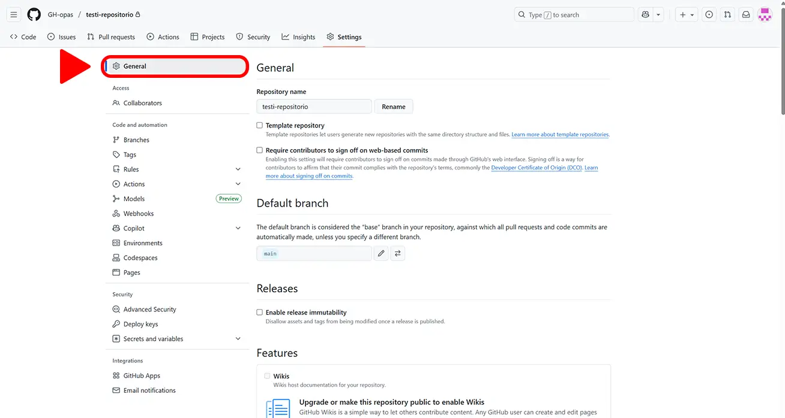
Asetuksien General osio.
Klikkaa Danger Zone osiosta
Change visibility
nappia.
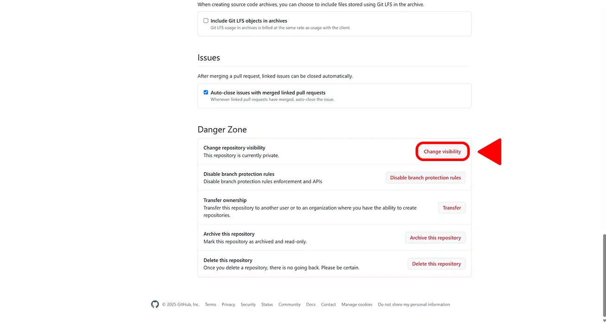
Näkyvyys asetuksen muuttaminen.
Klikkaa Vielä alle avautuvaa
Change to public
nappia.
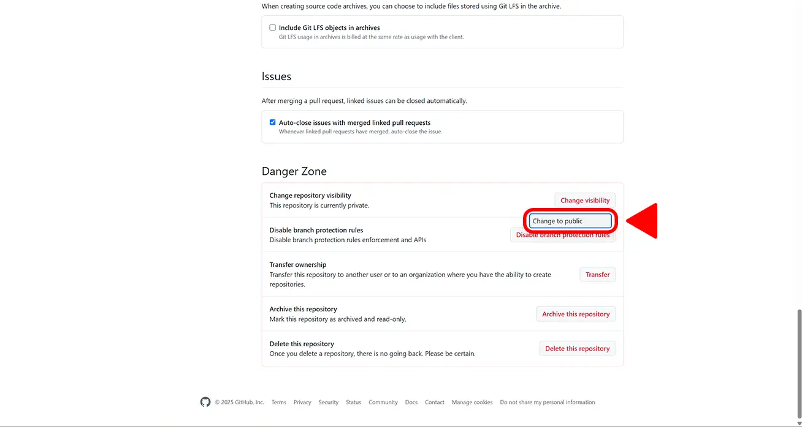
Muuttaminen julkiseksi.
Vahvista avautuvaan ruutuun, että haluat tehdä repositoriosta julkisen
klikkaamalla
I want to make this repository public
nappia.
Vahvistus repositorion muuttamisesta julkiseksi.
Vahvista vielä, että olet ymmärtänyt mitä repositorion julkiseksi
muuttaminen tarkoittaa klikkaamalla
I have read and understand these effects
nappia.
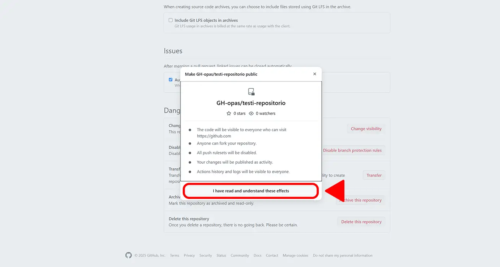
Vahvistus että olet ymmärtänyt mitä repositorion julkiseksi
muuttaminen tarkoittaa.
Tee repositoriosta julkinen klikkaamalla
Make this repository public
nappia.
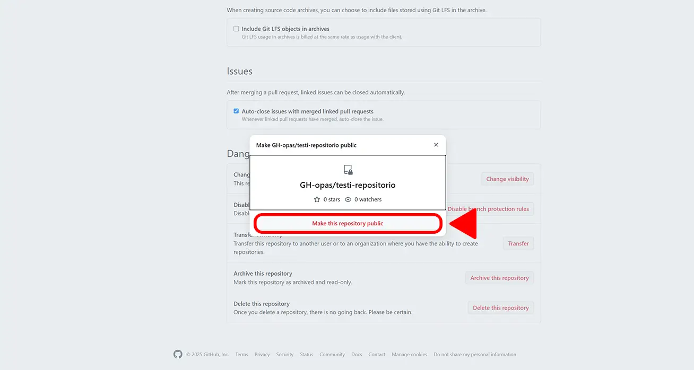
Tee repositoriosta julkinen.
Mikäli käytössä on kaksivaiheinen tunnistautuminen, niin vahvista
vielä käyttöoikeutesi syöttämällä tunnistautumissovelluksesi antama
avain
ja klikkaamalla
Verify
nappia.
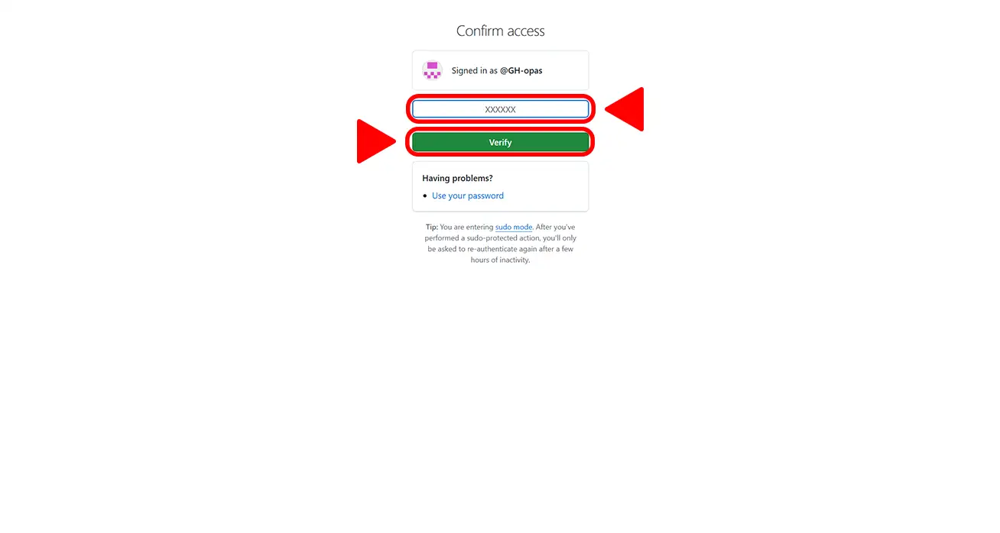
Käyttöoikeuden vahvistus.
Repositorio on nyt julkinen. Muuttaminen yksityiseksi noudattaa samaa
kaavaa kuin muutos julkiseksi.
Repositorio on nyt julkinen.
Repositorion näkyvyyttä voi muuttaa myöhemmin takaisin
yksityiseksi
(
private
), jos haluat rajata sen näkyvyyttä uudelleen. Muista kuitenkin, että
kaikki ennen muutosta ladatut tai kloonatut versiot jäävät käyttäjille,
joilla ne jo olivat.
Kun kehittäjä lisätään henkilökohtaisella GitHub-tilillä olevan
repositorion
käyttäjäksi
(
collaborator
), annetaan hänelle suoraan kirjoitusoikeudet (
write
) projektiin. Tämä tarkoittaa, että hän voi tehdä
commit-, push- ja merge-toimenpiteitä
ilman erillistä hyväksyntää.
Kirjoitusoikeudet eivät kuitenkaan mahdollista repositorion
poistamista, asetusten muuttamista tai muiden käyttäjien hallintaa.
Näihin tarvitaan
Admin
-oikeudet, jotka ovat yksityisellä tilillä perustetussa
repositoriossa vain sen luojalla/omistajalla.
Lisää repositorion käyttäjiksi kuitenkin ainoastaan henkilöitä,
joihin luotat ja joiden on tarkoitus työskennellä aktiivisesti
projektissa.
Mikäli käytössä on
organisaatiotili
, voi repositorion käyttäjille määrittää eri
roolit
(esimerkiksi
Read
,
Write
,
Maintain
tai
Admin
) riippuen siitä, mitä oikeuksia käyttäjälle halutaan antaa.
Mikäli käytössä on kaksivaiheinen tunnistautuminen vahvista vielä
käyttöoikeus syöttämällä tunnistautumissovelluksen antama
avain
ja klikkaamalla
Verify
nappia.
Käyttöoikeuden vahvistus.
Näkymä kun repositoriolla ei ole vielä omistajan lisäksi muita
käyttäjiä. Aloita uuden käyttäjän lisääminen klikkaamalla
Add people
nappia.
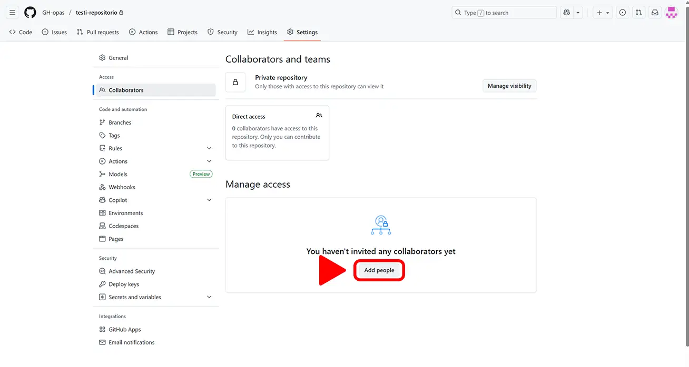
Repositorion käyttäjä asetukset ja käyttäjän lisäämisen aloitus.
Etsi lisättävä käyttäjä avautuvasta ruudusta syöttämällä
kenttää
käyttäjän nimi, nimimerkki tai sähköpostiosoite ja valitse haluttu
käyttäjä klikkaamalla alle avautuvasta
listasta
.
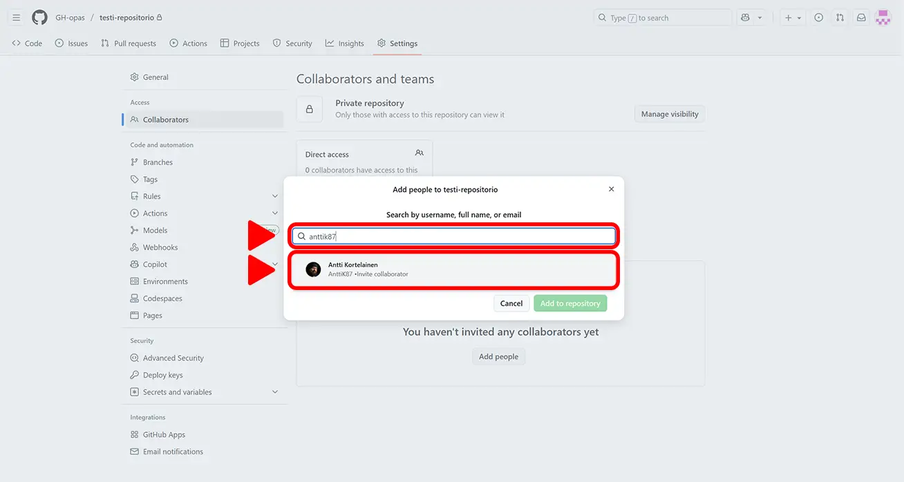
Lisättävän käyttäjän etsiminen.
Vahvista käyttäjän lisääminen klikkaamalla
Add
käyttäjänimi
nappia.
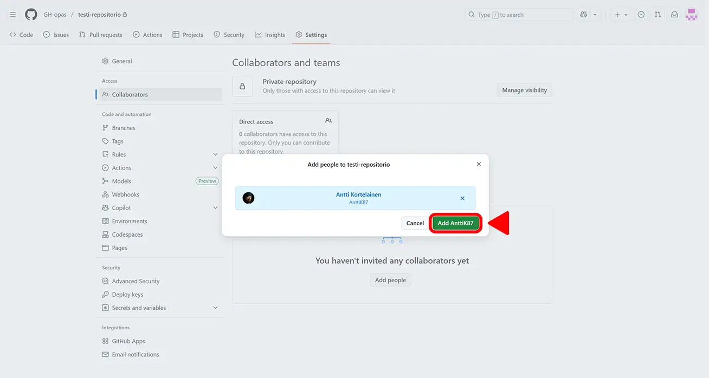
Valitun käyttäjän lisäämisen vahvistus.Käyttäjälle
on nyt lähetetty kutsu liittyä repositorion käyttäjäksi.
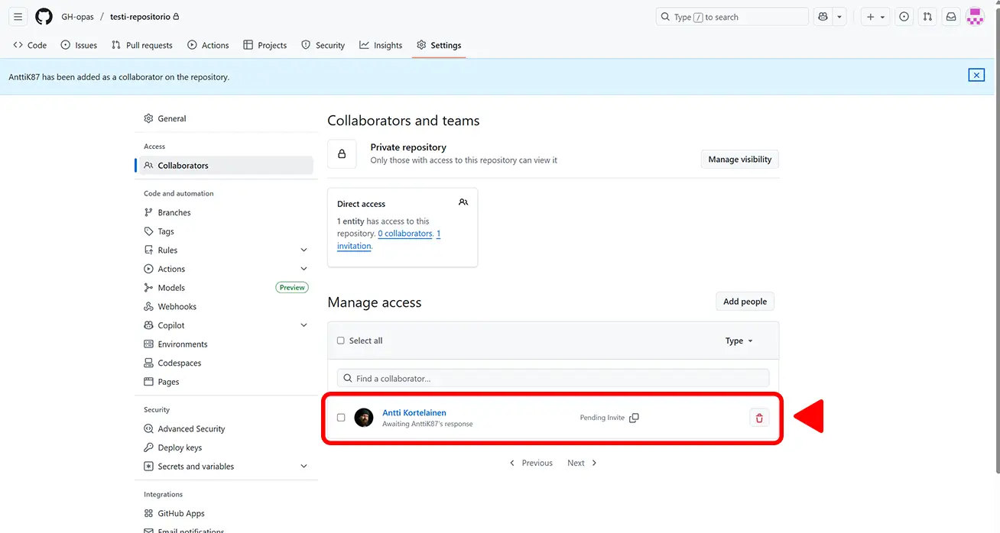
Käyttäjälle on nyt lähetetty kutsu.
Käyttäjän pitää siis hyväksyä kutsu omalta tililtään, jotta lisäys on
onnistunut. Kutsu löytyy tilin ilmoituksista, jonne pääsee
klikkaamalla
inbox-ikonia
oikealta yläreunasta.
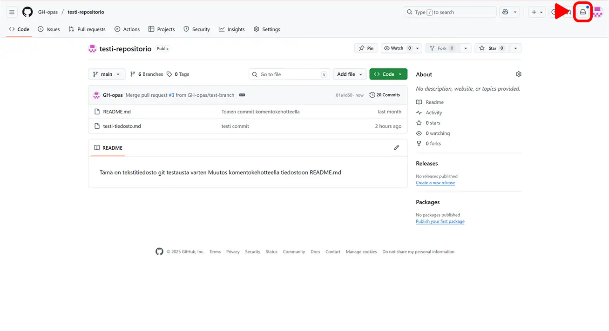
Käyttäjälle tulleet viestit löytyvät inbox-kuvaketta klikkaamalla.
Käyttäjä on nyt lisätty repositoriolle.
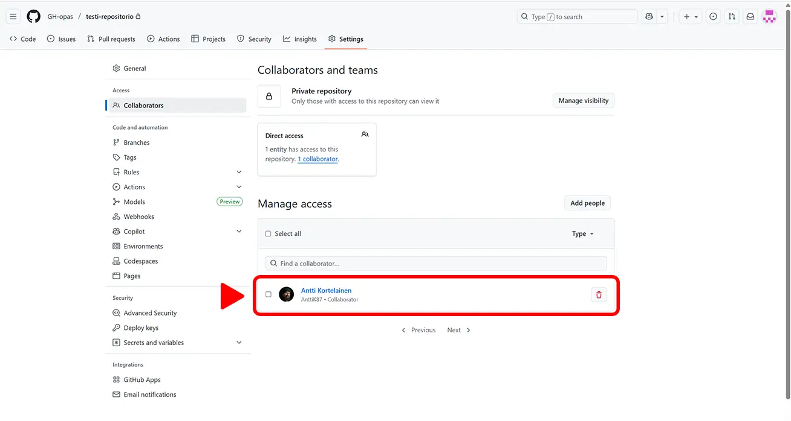
Käyttäjä lisätty repositoriolle.
Repositorion poistaminen (
Delete this repository
) on
pysyvä toimenpide
. Kun poistat repositorion, sen kaikki tiedostot, commit-historia,
asetukset katoavat pysyvästi eikä niitä voi palauttaa GitHubin
kautta.
Älä poista repositoriota, jos et ole varma, ettei siitä tarvita enää
mitään sisältöä tai commit-historiaa myöhemmin.
Jos haluat varmistaa, että sinulla on kopio projektista ennen
poistamista, voit kloonata sen omalle koneellesi komennolla:
git clone https://github.com/repositorion/url-osoite.git
Varmista, että olet asetuksien
General
osiossa ja vieritä ikkunan alareunaan.
Asetuksien General osio.
Klikkaa Danger Zone osiosta
Delete this repository
nappia.
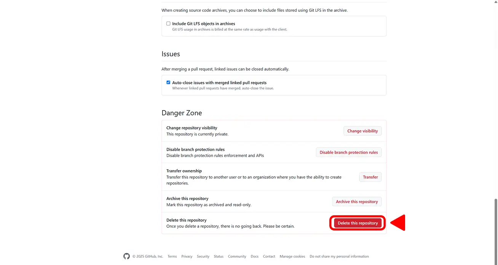
Repositorion poistaminen.
Mikäli haluat säilyttää projektin tiedostot, varmista että olet
kloonannut tai ladannut ne ennen poistamista.
Vahvista avautuvaan ruutuun, että haluat poistaa repositorion
klikkaamalla
I want to delete this repository
nappia.
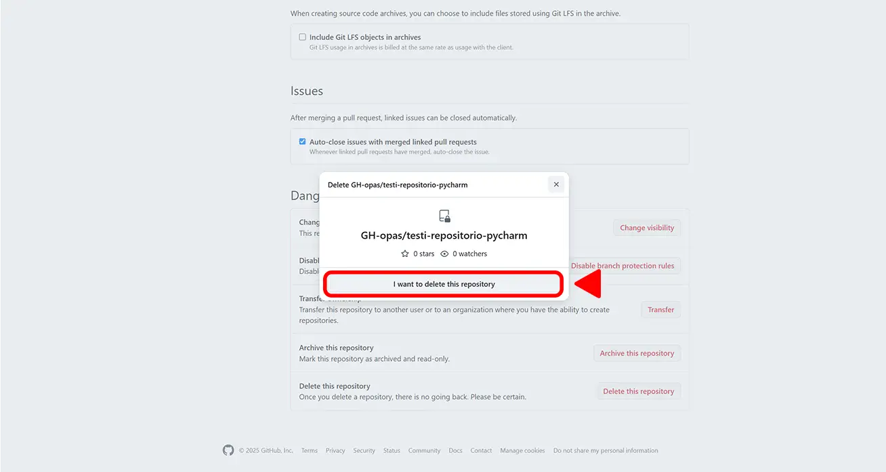
Vahvistus repositorion poistamisesta.
Vahvista vielä, että olet ymmärtänyt mitä repositorion poistaminen
merkitsee klikkaamalla
I have read and understand these effects
nappia.
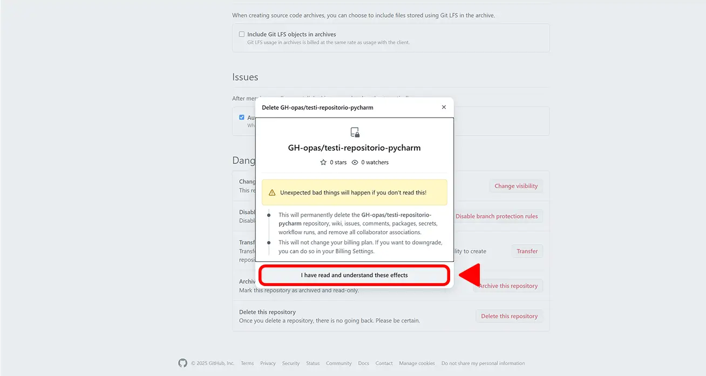
Vahvistus että olet ymmärtänyt mitä repositorion poistaminen
tarkoittaa.
Vahvista poistaminen syöttämällä
käyttäjänimi/repositorion nimi
tekstikenttään ja klikkaamalla
Delete this repository
nappia.
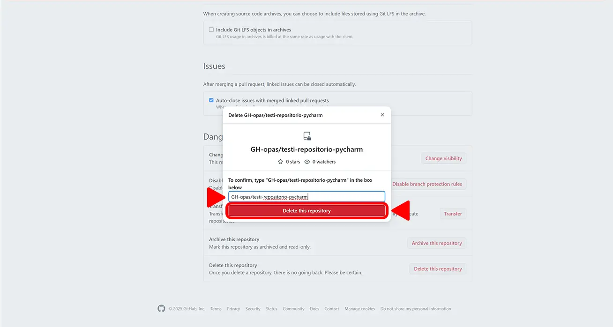
Syötä annettu teksti poistaaksesi repositorion.
Mikäli käytössä on kaksivaiheinen tunnistautuminen vahvista vielä
käyttöoikeutesi syöttämällä tunnistautumissovelluksesi antama
avain
ja klikkaamalla
verify
nappia.
Käyttöoikeuden vahvistus.
Repositorio on nyt poistettu ja sitä ei voi enää palauttaa GitHubin
kautta.
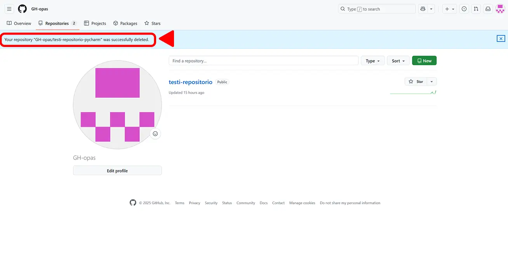
Repositorio on nyt poistettu lopullisesti.
Päähaaran (
main
) uudelleennimeäminen vaikuttaa koko projektiin ja kaikkiin sen
käyttäjiin. Nimen muuttamisen jälkeen vanha haaran nimi ei enää
toimi push- tai pull-komentoihin, ennen kuin käyttäjät päivittävät
paikalliset asetuksensa.
Mikäli olet jo jakanut repositorion muille, ilmoita nimenmuutoksesta
tiimillesi. Jokaisen tulee päivittää oma paikallinen viittaus
haaraan komennolla:
git branch -m main uusi-nimi git fetch origin git branch -u origin/uusi-nimi uusi-nimi git remote set-head origin -a
Suositeltavaa on tehdä nimenmuutos vain projektin alkuvaiheessa,
ennen kuin useampi henkilö on ottanut repositorion käyttöön.
Anna
tekstikenttään
default haaralle uusi nimi ja klikkaa
Rename branch
nappia.
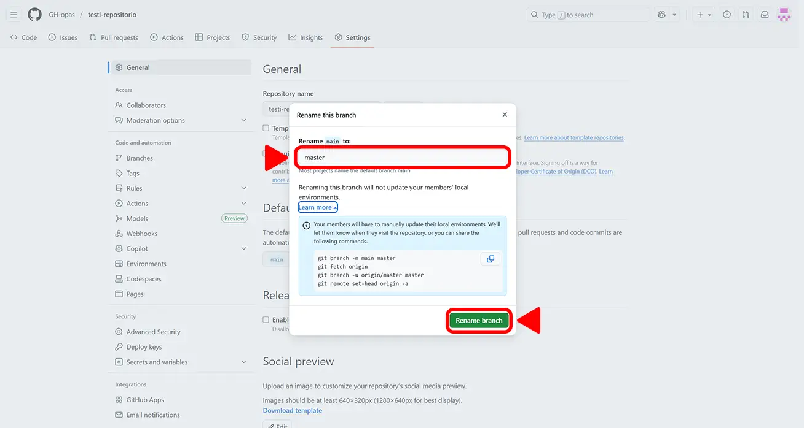
Uuden nimen syöttäminen.
Päähaara on nyt nimetty uudelleen. Muutoksessa voi kestää hetki.
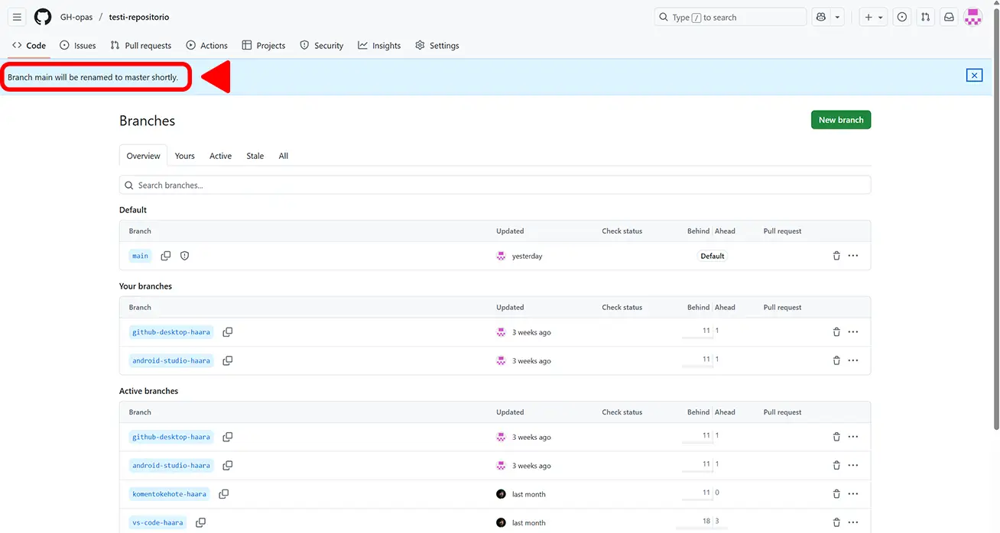
Näkymä muutoksen jälkeen ja ilmoitus nimenmuutoksesta.
Oletushaaran (
default branch
) vaihtaminen vaikuttaa kaikkiin käyttäjiin ja toimintoihin, kuten
pull requestit
,
workflow-prosesseihin
ja
GitHub Pages -julkaisuihin
.
Kun vaihdat oletushaaran, uusi haara korvaa aiemman (esim.
main
→
develop
) GitHubin oletuskohteena. Tämä tarkoittaa, että uudet pull
requestit ja commitit kohdistuvat uuteen oletushaaraan.
Aiemmin avatut pull requestit ja automaatiot, jotka viittaavat
vanhaan oletushaaraan, on hyvä tarkistaa ja päivittää tarvittaessa.
Muutokset eivät poista vanhaa haaraa. Vanhasta oletushaarasta tulee
tavallinen haara, jota voi käyttää edelleen, jos sitä tarvitaan.
Jos projektilla on useita tekijöitä, ilmoita muutoksesta kaikille
ennen haaran vaihtamista, jotta kukaan ei jatka työskentelyä väärään
haaraan.
Vaihtaaksesi mitä haraa käytetään default haarana:
Varmista, että olet asetuksien
General
osiossa.
Klikkaa Default branch-osion
vaihto
kuvaketta
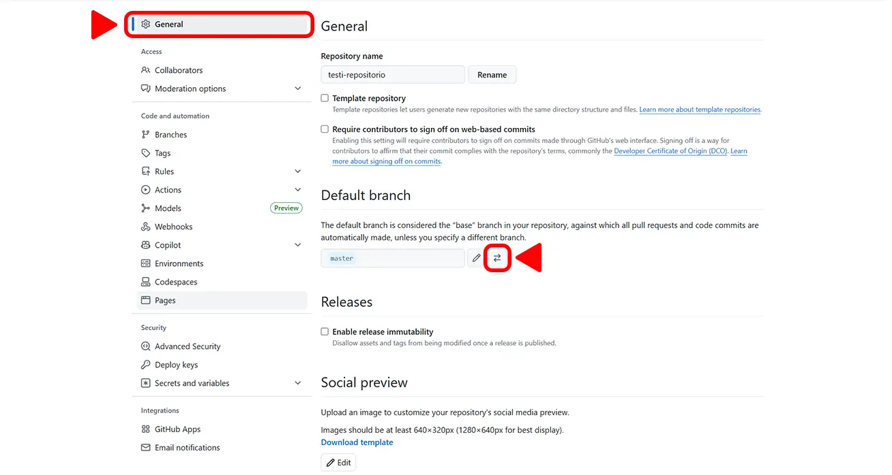
Asetuksien General osio (Default branch).
klikkaa nykyisen päähaaran
nimeä
avataksesi alasvetovalikon ja valitse valikosta se haara, jota haluat
käyttää
uutena oletushaarana
.
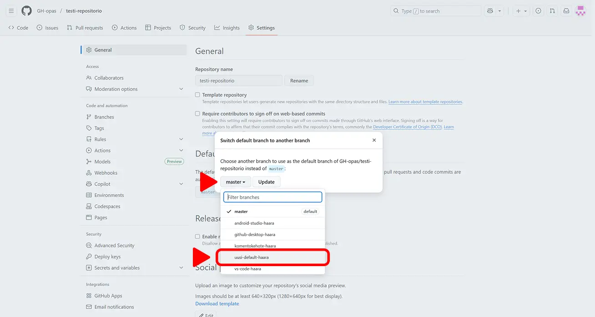
Uuden päähaaran valitseminen.
Vahvista valinta klikkaamalla
Update
nappia.
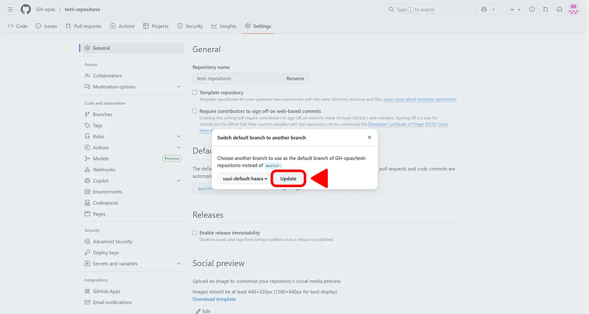
Valinnan vahvistaminen.
Vahvista muutos vielä klikkaamalla
I understand, update the default branch
nappia.
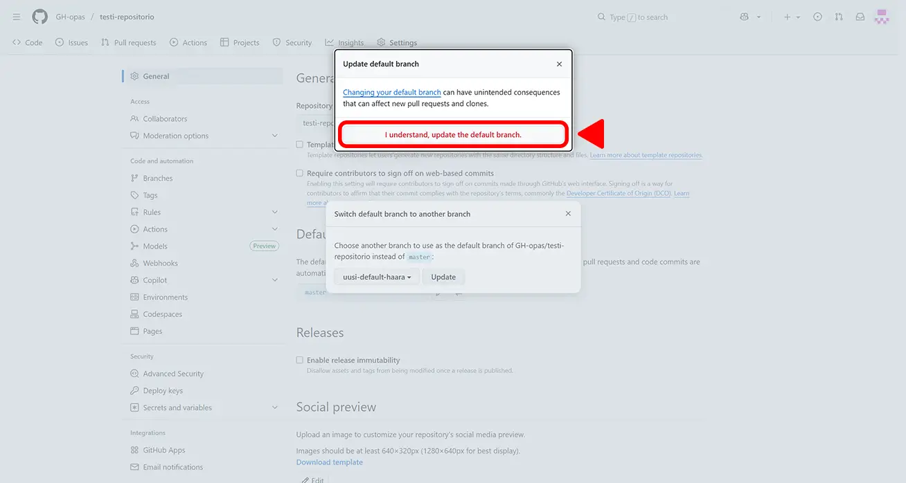
Muutoksen vahvistaminen.
Käytettävä päähaara on nyt vaihdettu.
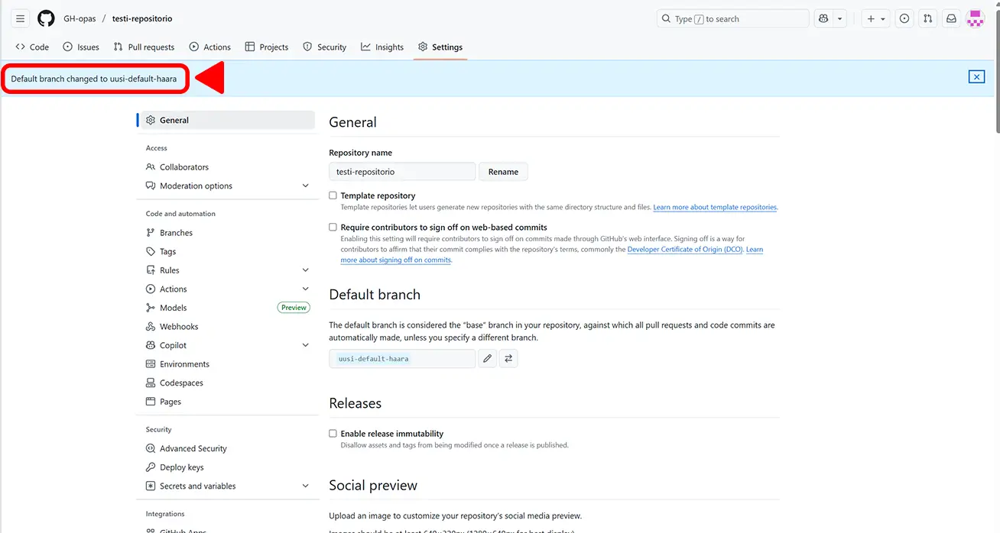
Näkymä vaihdon jälkeen ja ilmoitus päähaaran vaihtumisesta.
Repositorion
kuvaus (Description)
auttaa muita ymmärtämään projektin tarkoituksen yhdellä
silmäyksellä. Kuvaus näkyy automaattisesti repositorion etusivun
yläosassa nimen alapuolella.
Kuvaus on erityisen tärkeä julkisissa (Public) repositorioissa,
sillä se auttaa muita käyttäjiä ja hakukoneita ymmärtämään, mistä
projektissa on kyse. Hyvin kirjoitettu kuvaus tekee repositoriosta
helpommin löydettävän ja uskottavamman.
Kirjoita kuvaus lyhyesti ja ytimekkäästi. Esimerkiksi:
"Kouluprojekti, jossa harjoitellaan Git-versionhallinnan ja
GitHubin perustoimintoja."
Älä lisää kuvaukseen arkaluontoisia tietoja, kuten henkilön nimeä,
opiskelijanumeroa, sähköpostiosoitetta tai muita henkilökohtaisia
tietoja. Kuvaus voi näkyä julkisesti myös hakukoneissa, jos
repositorio on Public-tilassa.
Voit halutessasi lisätä myös projektin
verkkosivun tai GitHub Pages -osoitteen
näkymään kuvauskentässä.
Mene repositorion etusivulle klikkaamalla
code
välilehteä, jos et ole jo siellä. Muokkaa kuvausta klikkaamalla
About-osion
ratas
kuvaketta.
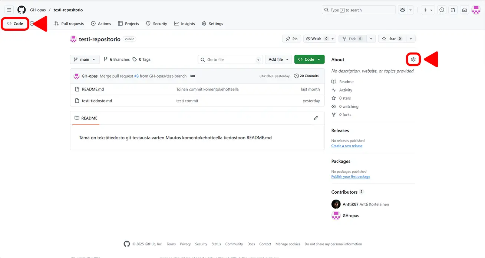
Repositorion etusivu ja About-osio.
Syötä repositorion kuvaukseen liittyvät tiedot:
Description
kenttään lyhyt ja ytimekäs kuvaus projektista.
Website
kenttään voit halutessasi lisätä projektin verkkosivun, GitHub
Pages -osoitteen tai vaikkapa linkin projektia esittelevään
videoon.
Topics
kenttään voit lisätä avainsanoja, jotka kuvaavat projektia.
Avainsanat auttavat muita käyttäjiä löytämään repositorion.
Releases, Packages ja Deployments osiot voit jättää tai piilottaa
etusivulta tarpeen mukaan.
Klikkaa lopuksi
Save changes
nappia.
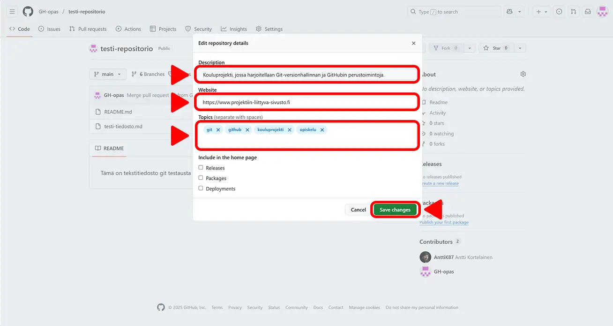
Kuvauksen ja muiden repositorioon liittyvien tietojen lisääminen.
Kuvauksen lisääminen on nyt valmis. Kuvaus näkyy repositorion
etusivulla.
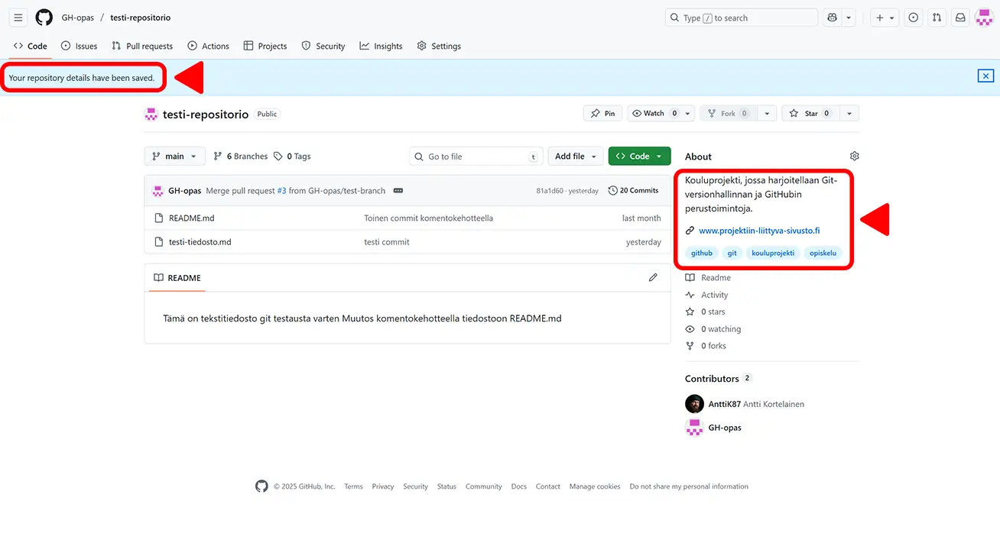
Näkymä ja ilmoitus kuvauksen lisäämisen jälkeen.